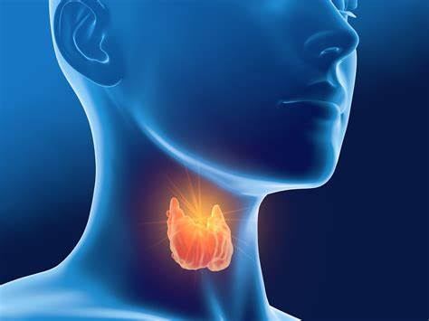
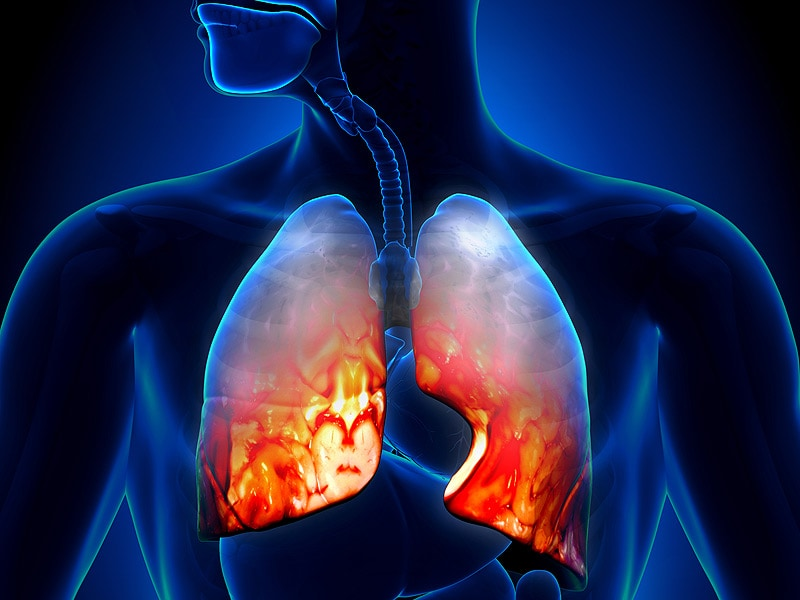

DIABETES
To know about the diabetes click on link.

Recommdation:-
1. Diabiantbuy
2. Ambicbuy
3. Dr. Vaidyas Diabex Capsulesbuy
4. Vedik Elements Diabo Vati buy
TUBERCULOSIS
To know about the tubercuosis click on link.

Recommdation:-
1. Dehlvi Hayat Bakshbuy
2. British Biologicals Pulmocare - Strawberry flavourbuy
3. Ayurvedix Arjun Chhal Arkbuy
4.ITRIFAL GHADUDI useful for a Tuberculosis infection of the lymph nodes in the neck. buy
THYROID
To know about the thyroid click on link.
Thyroid


Recomendation:-
1.CurevedaTM Herbal Thyro Thanksbuy
2.Gynoveda Thyroid Supplement Kanchnar Guggulubuy
3.Guduchi Ayurveda NAV-C Thyroid Care Capsule Medicine for hypothyroidism buy
Pneumonia

Recommdation:-
1.Baidyanath Raspeepari ORD buy
2.Himalaya Septilin Tablets buy
3.TrueBasics Lung Detox Supplements buy